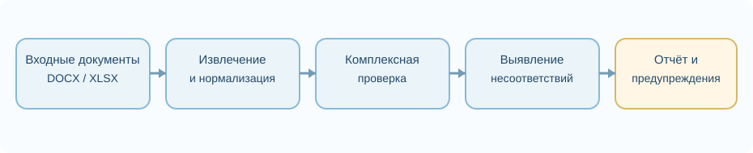

Реферат по теме магистерской работы
Разработка программного модуля выявления и предотвращения ошибок при подготовке выпускной документации
Введение
Подготовка выпускной документации в образовательной организации представляет собой последовательность операций по извлечению сведений из информационных систем и файлов, заполнению шаблонов, проверке данных и формированию итогового комплекта документов. В эту работу вовлечены разные источники: реестры обучающихся, учебные планы, сводные ведомости, таблицы с результатами освоения образовательных программ, дипломы и приложения к ним. При переносе одних и тех же сведений между несколькими файлами возникают ситуации, в которых документ технически корректен, но его содержание не согласовано с первоисточником.
Рассматриваемая тема связана с задачей автоматизированного контроля электронных документов двух распространённых форматов: DOCX и XLSX. Эти форматы являются частью семейства Office Open XML и имеют стандартизованную внутреннюю структуру. Однако соответствие структуры файла формату не гарантирует корректности имени выпускника, набора дисциплин, оценок, реквизитов или логических связей между документами. В связи с этим исследование направлено на совмещение структурной проверки, контроля качества данных и формализованных правил предметной области.
1. Актуальность исследования
Документы об образовании имеют высокую информационную значимость, а их подготовка предполагает строгую согласованность сведений. Ошибка в единственной записи может повлечь повторную печать, дополнительное согласование или исправление данных в нескольких системах. Ситуация осложняется тем, что разные подразделения могут пользоваться файлами неодинакового состава и структуры. Одни сведения находятся в XLSX, другие в DOCX, третьи повторяются в локальных реестрах, а единых правил автоматической проверки в конкретном процессе может не быть.
Актуальность темы определяется не отсутствием средств для работы с офисными документами как таковых, а необходимостью применять несколько механизмов контроля одновременно. Структурная валидация проверяет наличие ожидаемых элементов и допустимость их организации; проверка качества данных помогает обнаруживать пропуски и сомнительные значения; междокументное сопоставление контролирует согласованность сведений; а предметные правила выражают требования образовательной организации. Наличие каждого механизма в отдельности не обеспечивает выполнение остальных проверок.
При ручной обработке документов одна и та же ошибка может повторяться во многих сформированных файлах. Поэтому существенное значение имеет не только обнаружение некорректности в конечной версии, но и предупреждение пользователя на этапе подготовки комплекта. Перспективным направлением является разработка специализированного программного модуля, который сможет преобразовывать сведения из разных источников к общей форме, выполнять набор правил и выдавать понятные сообщения о несоответствиях без необходимости многократно перечитывать документы вручную.
2. Цель, объект и задачи исследования
Цель исследования - разработать и экспериментально оценить программный модуль, предназначенный для выявления и предупреждения ошибок при подготовке выпускной документации на основе совместной проверки DOCX/XLSX, исходных данных и формализованных правил.
Объект исследования - процесс подготовки выпускной документации образовательной организации. Предмет исследования - методы, алгоритмы и средства автоматизированного контроля структуры, содержимого и междокументной согласованности электронных документов, используемых в этом процессе.
- Проанализировать типы входных данных, документов и характерные категории ошибок, возникающих при подготовке выпускного комплекта.
- Исследовать возможности структурной валидации Office Open XML и методов контроля качества данных для обнаружения нарушений.
- Формализовать предметные правила проверки обязательных полей, допустимых значений, связей и логических зависимостей.
- Разработать алгоритм междокументного сопоставления сведений между исходными XLSX и формируемыми DOCX.
- Реализовать программный модуль проверки с диагностическими сообщениями и возможностью расширения набора правил.
- Провести проверку на эталонных и специально модифицированных документах и оценить полноту обнаружения ошибок.
3. Обзор исследований и разработок
3.1. Международные подходы
В международной практике исходной технологической базой служат стандарты Office Open XML, в частности ECMA-376 [1]. Они определяют состав пакетов документов и структуру XML-частей, что позволяет программно выявлять нарушения схемы и организации файла. Средства Microsoft Open XML SDK [2] дают доступ к соответствующим элементам в среде .NET, а документация по WordprocessingML и SpreadsheetML [3, 4] описывает особенности строения текстовых и табличных документов.
Другой важный подход - правило-ориентированная валидация. Стандарт ISO/IEC 19757-3 определяет использование Schematron [6], позволяющего выражать утверждения о содержимом XML и зависимостях между элементами. В отличие от проверки одной только схемы, правила могут учитывать значения и сочетания полей. Однако такие правила требуется сначала сформулировать с учётом процессов конкретной организации, а затем сопровождать по мере изменения регламентов.
Проблема качества данных изучается и независимо от файловых форматов. Работа Wang и Strong [9] подчёркивает, что качество нельзя свести к одной характеристике точности, поскольку пользователю важны полнота, своевременность, согласованность и пригодность сведений для задачи. В обзоре Cichy и Rass [10] систематизируются различные подходы к оценке качества данных. Эти результаты помогают обосновать многоуровневую проверку исходных таблиц, но сами по себе не задают специальных правил заполнения выпускных документов.
3.2. Электронные таблицы и поиск потенциальных ошибок
Ошибки в таблицах являются отдельной исследовательской проблемой. Raymond Panko в работе «What We Know About Spreadsheet Errors» [7] рассматривает распространение ошибок при использовании электронных таблиц, а Hermans, Pinzger и van Deursen [8] предлагают выявлять и визуализировать признаки проблемных связей между листами. Эти исследования подтверждают полезность автоматических проверок и анализа зависимостей, но предметом контроля выпускной документации дополнительно являются текстовые поля, печатные шаблоны и согласованность между разными типами файлов.
В прикладных проектах обработка DOCX и XLSX может выполняться с помощью специализированных библиотек. Например, python-docx [11] и openpyxl [12] предоставляют средства чтения и изменения содержимого файлов. Они удобны для извлечения данных и подготовки тестовых наборов. При этом полноценная валидация структуры Office Open XML требует дополнительных механизмов, таких как валидатор в составе Open XML SDK, и не заменяется простым чтением файла.
3.3. Национальный и локальный контекст
В российских образовательных организациях задачи подготовки справок, приложений к дипломам и других типовых документов возникают в рамках повседневного документооборота. Конкретная структура файлов и состав реквизитов определяются действующими локальными процессами и правилами заполнения. Поэтому исследовательское решение целесообразно проектировать не как универсальную проверку любого произвольного текста, а как конфигурируемую систему, учитывающую явно заданные ограничения соответствующего процесса.
Локальный контекст исследования связан с опытом автоматизации процессов на факультете компьютерных технологий и прикладной математики Кубанского государственного университета. В ходе практической работы рассматривались подготовка справок об обучении, обработка сведений о студентах, создание выпускных документов и учёт образовательных результатов. Такой опыт помогает выделить проблемы повторяющихся данных, неполных записей и расхождений между источником и сформированным документом. При этом для окончательных выводов необходимы проверяемые экспериментальные данные и отдельное тестирование разработанного модуля.
4. Методы исследования и общая архитектура
В качестве основных методов исследования рассматриваются структурный разбор офисных файлов, валидация по правилам, контроль полноты и диапазонов, поиск дублирующихся значений, сопоставление ключевых атрибутов между документами, а также тестирование программного обеспечения. Важным этапом является нормализация: значения из неоднородных источников должны быть приведены к форме, пригодной для сравнения. Например, необходимо учитывать различия в написании имён, форматах дат, пробельных символах и представлении оценок.
Предлагаемая архитектура включает модуль приёма исходных DOCX/XLSX, компонент извлечения данных, слой нормализации, подсистему проверок и формирование диагностического отчёта. Система должна отделять ошибки структуры и неполные поля от нарушений предметных ограничений, а также объяснять, какие сведения не совпали и откуда они были получены. Это позволяет связывать найденную проблему с конкретным документом и этапом подготовки.

В качестве технических средств предполагается применение .NET и Open XML SDK для структурной обработки файлов, а также формализованных правил, описывающих требования предметной области. Для анализа результатов используются таблицы, схемы алгоритмов и метрики тестирования. Выбор конкретных инструментов должен быть подтверждён опытной реализацией, а не выводиться только из перечня их функциональных возможностей.
4.1. Структурная проверка
Структурный уровень определяет, соответствуют ли входные файлы ожидаемым форматам, доступны ли обязательные части пакета, корректны ли связи элементов и возможно ли получить необходимые данные. Такие проверки важны как предварительное условие дальнейшего анализа. Если невозможно прочитать структуру файла, содержательная проверка не должна выдавать недостоверный результат: пользователь должен получить понятное сообщение о повреждённом или неподдерживаемом документе.
4.2. Содержательные и междокументные правила
На следующем уровне предполагается контролировать обязательность полей, непротиворечивость значений и их соответствие заданным форматам. Примерами являются наличие идентификатора обучающегося, допустимость даты, полнота сведений о дисциплинах и согласованность реквизитов. Отдельным классом являются междокументные правила: сравнение ФИО, результатов обучения и иных повторяющихся сведений между реестром XLSX и документом DOCX.
Возможные расхождения должны представляться не только в виде отметки «ошибка», но и в виде диагностической записи: тип нарушения, документ-источник, документ-получатель, проверяемое поле, обнаруженное и ожидаемое значение. Такое представление пригодно для проверки человеком и последующего анализа типичных причин возникновения ошибок.
5. Имеющиеся результаты и план экспериментальной проверки
К моменту подготовки настоящего реферата сформулированы предметная область и набор исследовательских задач, выделены уровни контроля, рассмотрены международные технические стандарты и методы проверки качества данных, определены основные направления алгоритма междокументного сопоставления. Эти результаты отражены в научно-исследовательских материалах, посвящённых обработке информации, программной архитектуре и проверке согласованности данных.
Для проверки разрабатываемого подхода предлагается сформировать корпус корректных комплектов выпускной документации и контролируемо модифицированных копий. Каждая модификация должна иметь заранее установленный тип ошибки и ожидаемый результат. Эксперимент следует разделить на группы по формату документа, классу нарушения, сложности структуры и происхождению данных. В противном случае выборка может содержать много одинаковых простых случаев и не отражать устойчивость системы к более сложным ошибкам.
Оценивать эффективность целесообразно по доле обнаруженных реальных ошибок (Recall), доле корректных предупреждений среди всех предупреждений (Precision), их гармоническому среднему (F1), а также времени проверки комплекта документов. Следует отдельно учитывать ложные срабатывания и результаты для разных типов ошибок. Недопустимо утверждать повышение точности или сокращение времени без фактически полученных замеров. Реализация программного модуля и полноценная экспериментальная проверка рассматриваются как последовательные этапы дальнейшего исследования.
Заключение
Подготовка выпускной документации требует совместного контроля структуры файлов, корректности входных сведений и согласованности данных между связанными документами. Рассмотренные технологии решают отдельные части этой задачи, однако требования конкретного образовательного процесса должны быть выражены в виде формализованных предметных правил. Поэтому целесообразно исследовать архитектуру программного модуля, объединяющую структурный анализ DOCX/XLSX, нормализацию данных, междокументное сопоставление и диагностические сообщения.
Ожидаемый практический результат состоит в повышении воспроизводимости контроля и сокращении объёма ручных повторных проверок, что должно подтверждаться экспериментально. Дальнейшая работа включает уточнение правил, программную реализацию, разработку тестового корпуса и измерение качества обнаружения ошибок. Основным принципом остаётся прозрачность: каждый выявленный дефект должен сопровождаться указанием нарушенного требования и сведений, на основании которых сделан вывод.
Список использованных источников
- Ecma International. ECMA-376: Office Open XML File Formats. Источник.
- Microsoft. Open XML SDK. Источник.
- Microsoft. Structure of a WordprocessingML document. Источник.
- Microsoft. Structure of a SpreadsheetML document. Источник.
- Microsoft. How to validate a word processing document. Источник.
- ISO/IEC. ISO/IEC 19757-3: Rule-based validation using Schematron. Источник.
- Raymond R. Panko. What We Know About Spreadsheet Errors. Источник.
- Felienne Hermans, Martin Pinzger, Arie van Deursen. Detecting and Visualizing Inter-Worksheet Smells in Spreadsheets. Источник.
- Richard Y. Wang, Diane M. Strong. Beyond Accuracy: What Data Quality Means to Data Consumers. Источник.
- Christian Cichy, Stefan Rass. An Overview of Data Quality Frameworks. Источник.
- python-docx contributors. python-docx documentation. Источник.
- openpyxl contributors. openpyxl documentation. Источник.